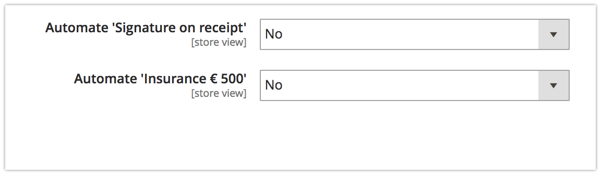
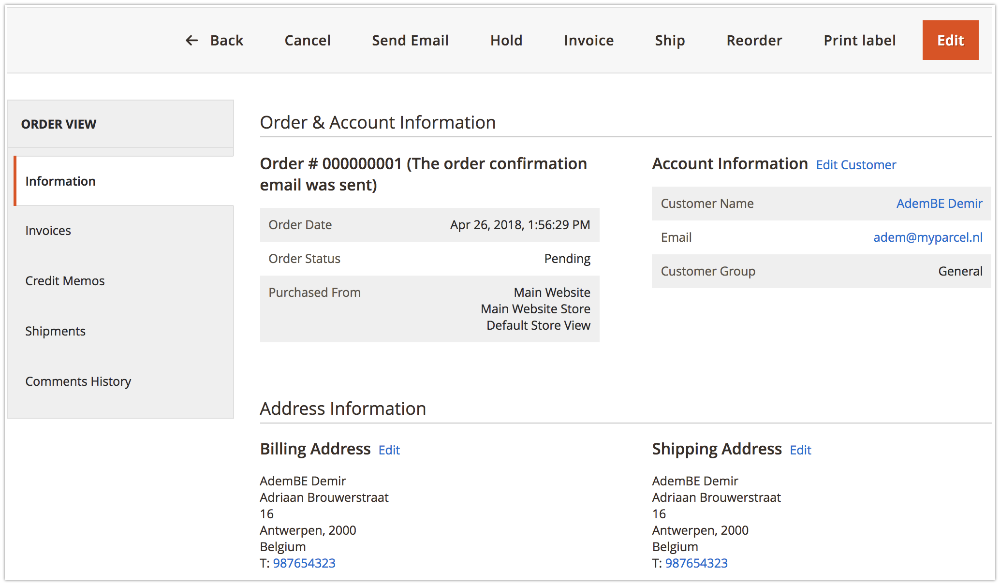
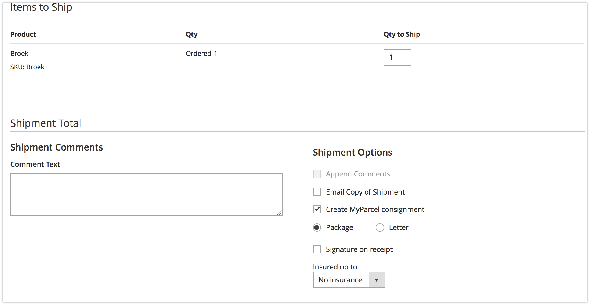

Inleiding
Deze handleiding beschrijft de functionaliteiten van de MyParcel België extensie voor Magento 2.
Met deze Magento 2 extensie kun je twee soorten MyParcel België zendingen aanmaken:
- Normaal (Binnen België met uitgebreide bezorgmoment opties en verzendmoment opties)
- Pakketten naar buitenland, alleen voor de EU.
Inhoud
1 Installatie en update
1.1 Technische vereisten
Om de MyParcel België Magento 2 extensie te gebruiken dient uw server aan één van de volgende onderstaande vereisten te voldoen:
- PHP versie 5.6
- PHP versie 7 of hoger
De onderstaande Magento versie wordt ondersteund:
- Community 2.x
1.2 Installatie
De MyParcel België Magento 2 extensie is niet te downloaden via de Magento Marketplace.
Voor het installeren adviseren wij om een backup te maken van jouw Magento 2 omgeving. De extensie is te verkrijgen via de terminal, raadpleeg jouw webbeheerder. Jouw webbeheerder kan het volgende commando in de root van de website (in bv. public_html) uitvoeren om de MyParcel België extensie te installeren:
composer require myparcelbe/magento

Om de Username en Password te verkrijgen ga je naar https://marketplace.magento.com. Hier kun je een account aanmaken en inloggen. Ga daarna in My Account naar Marketplace. Klik vervolgens op My Access Keys en op Magento 2.

Hier zie je public key en een private key. De public key kan je in de terminal gebruiken als username en de private key kan je gebruiken als Password. Zie je de keys nog niet? Klik dan op Create A New Access Key.

Om de cache te legen en andere benodigde acties van Magento 2 uit te voeren gebruik het volgende commando: rm -rf var/di/*; rm -rf pub/static/*; rm -rf var/cache/*; rm -rf var/pagecache/*; rm -rf var/generation/*; rm -rf var/dir/*; rm -rf var/view_preprocessed/*; php bin/magento cache:flush && php bin/magento setup:upgrade && php bin/magento setup:static-content:deploy && php bin/magento setup:static-content:deploy nl_NL && php bin/magento indexer:reindex
1.3 Update
Om een update uit te voeren kun je het volgende commando gebruiken:
composer update myparcelbe/magento
Maak je momenteel gebruik van de MyParcel België versie 1.x en zou je hem graag willen updaten naar een nieuwere versie 2.x, dan zou je de onderstaande commando moeten gebruiken om laatste versie te installeren:
composer require myparcelbe/magento "~2.1"
Om de cache te legen en andere benodigde acties van Magento 2 uit te voeren gebruik het volgende commando:
rm -rf var/di/*; rm -rf pub/static/*; rm -rf var/cache/*; rm -rf var/pagecache/*; rm -rf var/generation/*; rm -rf var/dir/*; rm -rf var/view_preprocessed/*; php bin/magento cache:flush && php bin/magento setup:upgrade && php bin/magento setup:static-content:deploy && php bin/magento setup:static-content:deploy nl_NL && php bin/magento indexer:reindex
2 Configuratie
Ga naar het menu Stores → Configuration → MyParcel om de MyParcel België extensie te
configureren.

Verder zie je 4 tabbladen om uit te kiezen. Op het tabblad 'versie' kun jij zien welke versie jij van de plugin hebt geinstalleerd. Op het tabblad 'Algemene instellingen' kun je je API key invoeren en jouw printvoorkeur instellen. Op het tabblad 'Standaard verzendinstellingen' kun je de default voorkeuren voor de MyParcel België verzendopties aangeven. Op het tabblad 'checkout instellingen' kun jij aanvullende verzendopties instellen waaruit jouw klant in de winkelwagen kan kiezen.
2.1 Algemene instellingen
2.1.1 API key instellen
Hier kun je jouw API Key invullen. Deze zijn nodig om de zendingen door te kunnen zetten naar MyParcel België. Deze gegevens kun je vinden in jouw MyParcel België account op backoffice.sendmyparcel.be en ga vervolgens naar Instellingen -> Algemeen

2.1.2 Print oriëntatie
Kies de Print oriëntatie. Als je kiest voor A4 formaat zullen vier verzendlabels per A4 vel geprint
worden. Als je kiest voor A6 formaat zijn de verzendlabels geschikt voor het printen met een speciale
labelprinter zoals een Zebra of Dymo 4XL.

2.2 Standaard verzendinstellingen
Bij Standaard verzendinstellingen kun je configureren hoe je wil dat jouw zending standaard verwerkt worden wanneer je de MyParcel België extensie voor Magento 2 gebruikt. 
2.2.1 Standaard verzendopties
Op basis van de ingevulde orderwaarde worden de onderstaande opties geactiveerd. Voorbeeld: Indien je bij Verzekerd tot € 500 bijvoorbeeld de waarde 100 invult, worden orders met een verkoopwaarde boven de € 100 automatisch verzekerd tot een waarde van € 500.
- Handtekening bij ontvangst
- Verzekerd tot € 500
Let op: Op het moment dat Nee ingevuld staat, is de optie niet geactiveerd. Bij invullen van Ja staat de optie actief. Wanneer er bij 'Vanaf prijs' een 0 wordt ingevuld zal de optie ook actief zijn.
3 Backend functionaliteiten
3.1 Verzending aanmaken
Een MyParcel België zending aanmaken kan op twee manieren:
1. Batch methode in het bestellingenoverzicht.
- Selecteer de orders die je wilt exporteren naar MyParcel België.
- Kies in de actie balk Print MyParcel België labels
- Kies voor de juiste printpositie, indien je voor A4 hebt gekozen.
- Het PDF verschijnt op je computer en is klaar om te printen.
- Wanneer je de instellingen in stap 3 wil overslaan, bijvoorbeeld omdat je via de ‘standaard verzendinstellingen’ al de juiste verzendopties aan jouw bestellingen hebt meegegeven, dan kan je via ‘Print MyParcel labels direct’ je labels direct downloaden.


2. Per bestelling als je een Magento zending aanmaakt.
- Klik op de desbetreffende order en kies rechtsboven voor de knop Verzenden. 
- Rechts onderin verschijnt een vak. Hier kan je zowel het verzendtype aanpassen als de beschikbare verzendopties per verzendtype.
- Verstuur zending naar MyParcel België via Verzending InboekenDit zorgt ervoor dat er een concept verzending wordt aangemaakt.
- Vervolgens kun je meteen het label printen in de order door rechtsboven op de knop Print Label te klikken.


3.2 Orderoverzicht
Om je altijd inzicht te bieden in de status van jouw zendingen zijn er 3 nieuwe kolommen automatisch toegevoegd aan het orderoverzicht nadat de MyParcel België plugin is geïnstalleerd.

- Track status : Hier kun je de status van de zending zien, deze wordt altijd up to date gehouden.
- Track nummer : Hier vind je de barcode van je zending.
- Track actie : Wanneer de order nog niet verzonden is en je klikt op 'Select', dan verschijnt er een pop-up met download opties voor verzendlabels. Mocht je order al verzonden zijn, dan kan je hier het label nogmaals downloaden.
3.3 Track&Trace e-mail template
Wanneer er een orderbevestigingsmail naar de klant gestuurd wordt vanuit Magento neemt deze de barcode van de zending automatisch mee. Dit hoeft nu niet apart ingesteld te worden. Mocht je nu toch een andere Track & Trace email willen willen versturen naar de klant vanuit Magento 2, ga dan naar 'Winkels' → 'Configuratie' → 'Verkopen' → 'E-mails voor verkoop' → 'MyParcel barcode' en stel hier je eigen template naar wens in.
4 Checkout instellingen
Op het tabblad 'Checkout instellingen' kun je alle gewenste instellingen toepassen die zichtbaar zijn in de checkout. Dit tabblad wordt onderverdeeld in 'Basis instellingen' , 'Bezorging', 'Brievenbuspakje' , 'Ochtendlevering', 'Avondlevering' , 'Ophalen' en 'Extra vroeg ophalen'
4.1 Basis instellingen

4.1.1 Laatste bestelmoment
Hiermee kun je instellen tot welk moment het mogelijk is voor jou een bestelling klaar te maken voor levering. Indien jij hier tot 16:00 uur instelt, zullen alle klanten na dit tijdstip een latere dag in hun checkout te zien krijgen als eerste levermogelijkheid.
Bijvoorbeeld: Jij hebt een verwerktijd van 1 dag en kunt tot 16:00 bestellingen verwerken. De bestelling komt binnen op dinsdag 04 oktober om 16:02, de eerst volgende mogelijkheid voor jouw klant zou dan donderdag 06 oktober worden. Dit betekent voor jou dat je het pakket op woensdag zal inleveren bij een BPost punt.

4.1.2 Verzenddagen
Bij de verzenddagen kun je invullen op welke dagen het voor jou mogelijk is pakketten in te leveren voor collectie op dezelfde dag. In de checkout wordt hier rekening mee gehouden qua keuzes die worden getoond aan jouw klant.

4.1.3 Vertraging
Indien jij een langere verwerkingstijd nodig hebt om tot leveren over te gaan kun je dat hier aangeven. Hier zal rekening mee worden gehouden in het tonen van de beschikbare bezorgdagen in de checkout.
4.2 Bezorging

4.2.1 Zaterdag
Er kan ook gekozen worden om een pakket op maandag te laten bezorgen, houd er rekening mee dat je bij verzenddagen wel de zaterdag selecteert als verzenddag.
Let op: Zaterdag levering is alleen mogelijk wanneer het laatste bestelmoment voor vrijdag op 14:30 is ingesteld en wordt geleverd bij één van de hiervoor bestemde Bpost locaties.
4.2.2 Handtekening voor ontvangst
Je kunt hiermee aangeven of jouw klanten hier zelf voor kunnen kiezen in de checkout. Indien jij dit wilt weergeven in de checkout kies dan voor Ja Ook is het mogelijk om aan deze optie een eigen naam mee te geven, in het voorbeeld heet deze optie 'Handtekening voor ontvangst'. Als laatste optie kun je er ook een meerprijs aan koppelen, in het voorbeeld kost deze optie € 0.36 extra.
Er is ook een optie gemaakt voor een gecombineerde meerprijs voor de keuzes samenAlleen bij mij bezorgen en Handtekening voor ontvangst te bepalen. Je kunt zelf een prijs naar eigen inzicht invullen.
4.3 Ophalen Bpost locatie
Met deze optie kunnen jouw klanten kiezen om hun pakket bij een Bpost locatie op te halen. Deze locatie kunnen zij zelf kiezen in de checkout. Je kunt hier eventueel ook een meerprijs voor rekenen.

5 Veel gestelde vragen
5.1 Ondersteunen jullie mijn checkout?
De volgende checkouts zijn getest en worden ondersteund:
- OnePageCheckout, dit is de standaard checkout van Magento.
- MagePlaza One Step Checkout
5.2 Ik gebruik een postcodecheck extensie, is dat een probleem?
Het mogelijk een postcodecheck extensie te gebruiken in combinatie met de MyParcel België Magento 2
extensie. Doormiddel van de onderstaande link, kom jij op de site voor de door ons aanbevolen extensie.
Postcode Checkout Magento Extensie
5.3 Hoe kan ik gratis verzenden instellen?
Naast de Table Rates kun je ook gratis verzenden instellen via Marketing > Winkelwagen prijsregels.
- Klik rechts bovenin op Nieuwe regel toevoegen.
- Bij Regelgegevens geef je de regel een naam (voorbeeld: ‘gratis verzenden vanaf 50’). Zet de status op actief en kies bij websites en klantengroepen alle opties.
- Klik links boven op Voorwaarden en schrijf zelf de regel door op + te klikken. (voorbeeld: Subtotaal gelijk aan of groter dan 50)
- Ga naar de volgende stap acties en geef bij gratis verzending aan Alleen voor betreffende artikelen.
- Klik rechts bovenin op opslaan.